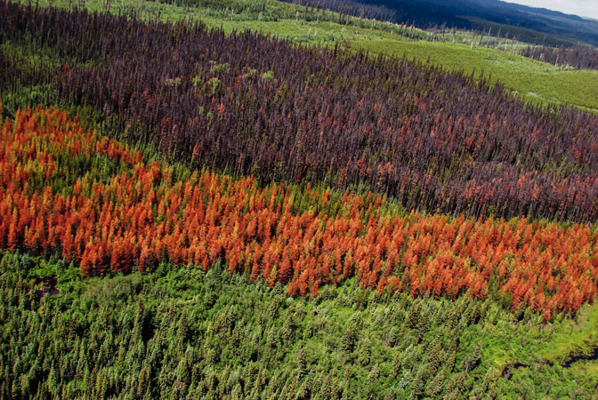
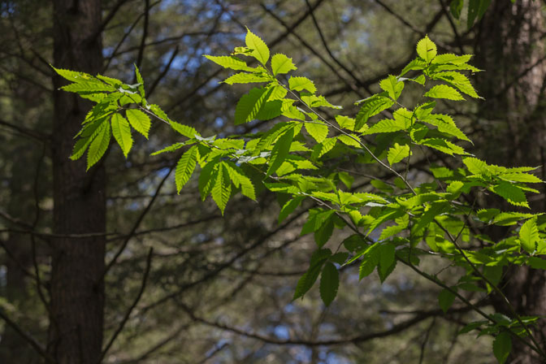
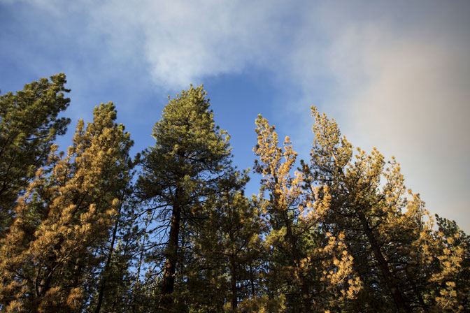
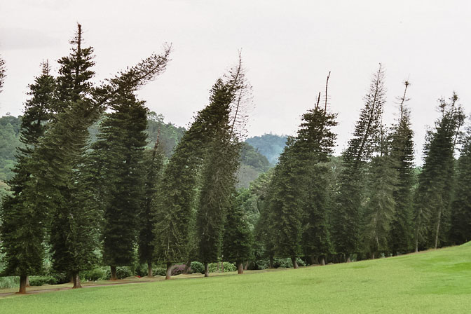

By Laura Olivieri Aug. 20, 2015 , 2:15 PM
Forests are vital. They help produce the oxygen we breathe and sequester the carbon that is warming the planet. But what happens when forest health starts to decline? This week’s Science special issue on forest health explores that question, and examines threats facing forests around the globe—both natural and human-caused.

SIGN UP FOR OUR DAILY NEWSLETTER
Get more great content like this delivered right to you!
By providing your email address, you agree to send your email address to the publication. Information provided here is subject to Science's Privacy Policy.
Fire is a natural part of forest ecosystems, and the boreal forests of the far north are no stranger to flames. One widespread boreal tree, the black spruce, owes its success to an adaption to fire. The spruce’s seeds are locked away in cones that only open up when they get singed. The seeds secure a new generation of spruce after a wildfire has swept through a forest. But increasingly hot summers are favoring more intense and frequent wildfires, a trend that makes it harder for new spruce to sprout.
The mountain pine beetle (responsible for the brown and orange patches pictured) is just one dramatic example of a growing insect threat to some forests. Thanks in part to a warming climate, in Canada the native beetle has spread into forests 300 kilometers east of its original territory in western Canada. (That’s a 3-hour drive at typical highway speeds.)
The heart of the North American boreal forest is losing vitality. For the past 30 years, the photosynthesis rate in some regions of the forests has been declining. The trend is most obvious from space, in data from satellite sensors that monitor specific wavelengths of light. Scientists call the phenomenon “browning”—the shade used in false color maps to show regions where photosynthesis is declining.
Droughts may prevent trees from curbing climate change, researchers warn. By studying tree rings, the scientists discovered that drought slows tree growth for years after the initial drought. The slower the trees grow, the less carbon dioxide they pull from the air.
Permafrost, which is a layer of permanently frozen soil found in northern climates, houses thousands of years of organic matter. Now, thanks to climate change and increased fire activity, the permafrost is melting in some areas. That could release massive carbon reserves into the atmosphere, accelerating the warming. Melting permafrost can also cause trees to tilt at extreme angles (like those pictured above).
Posted in: Plants & Animalsforest health
DOI: 10.1126/science.aad1637